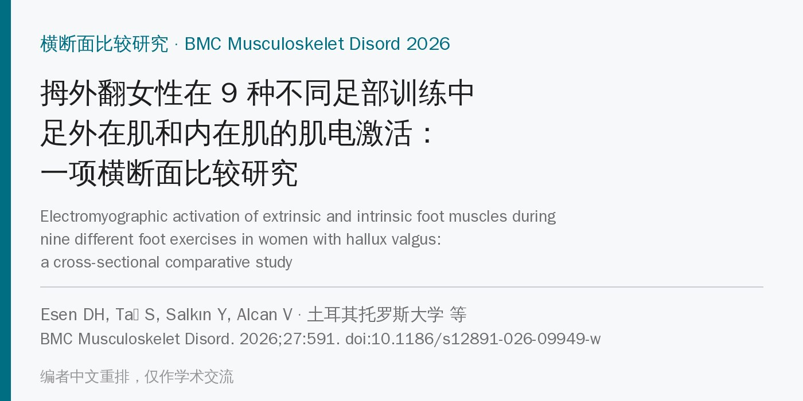
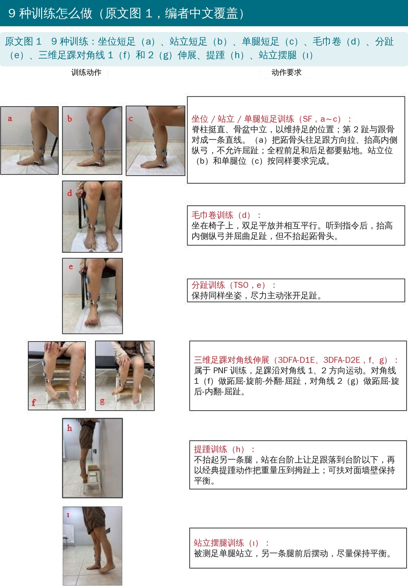
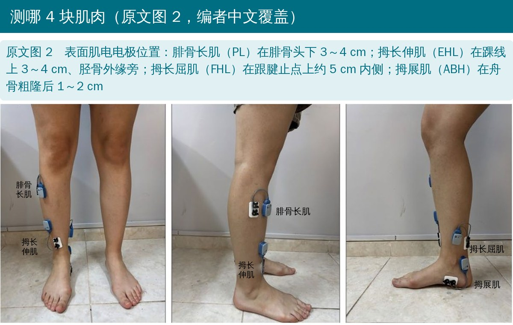
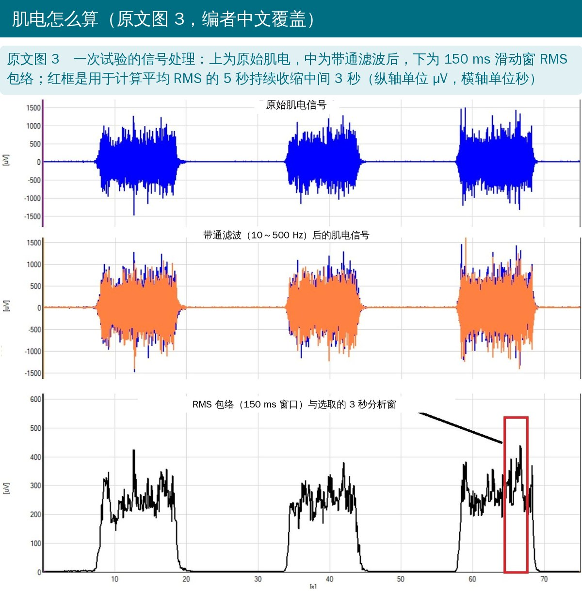
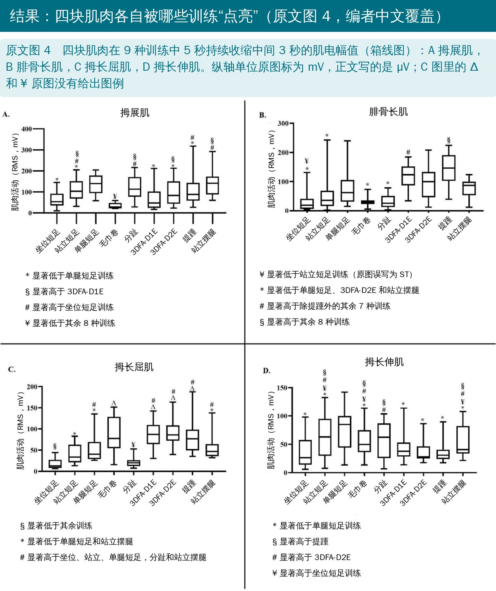
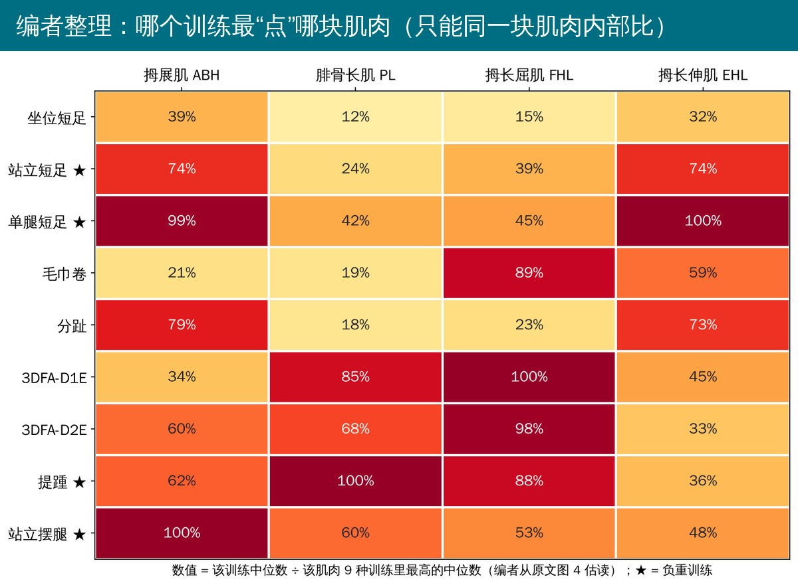
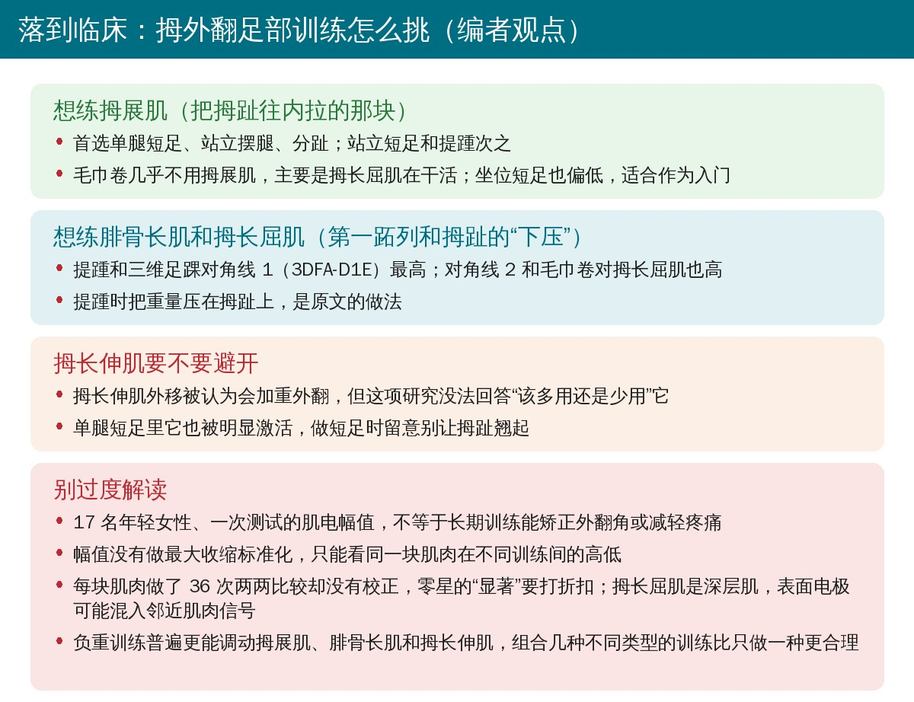

🔖原文信息（编者中文重排）
📚 文献信息
▪ Esen DH, Taş S, Salkın Y, Alcan V. Electromyographic activation of extrinsic and intrinsic foot muscles during nine different foot exercises in women with hallux valgus: a cross-sectional comparative study. BMC Musculoskelet Disord. 2026;27:591. doi:10.1186/s12891-026-09949-w
▪ 中文题目：拇外翻女性在 9 种不同足部训练中足外在肌和内在肌的肌电激活：一项横断面比较研究
▪ 作者来自土耳其托罗斯大学、梅尔辛大学和塔尔苏斯大学
▪ 文章类型：横断面比较研究（按 STROBE 报告），无基金资助
• 拇外翻是拇趾向外偏、第一跖骨向内移的进行性前足畸形，约 23% 的 18～65 岁成人有，女性更多，常伴疼痛、穿鞋困难、步态和平衡受影响
• 肌肉层面：拇展肌常变弱；拇长伸肌肌腱外移，可能把拇趾往外拉；拇长屈肌肌腱变细、走向改变；腓骨长肌负责第一跖列跖屈和内侧柱支撑
• 以往拇外翻的训练研究多集中在短足训练和分趾训练、只看拇展肌；负重、多平面和平衡类训练对内外在肌的作用缺乏比较
• 研究目的：在拇外翻女性中，比较 9 种常用足部训练时拇展肌、腓骨长肌、拇长屈肌和拇长伸肌的表面肌电；假设负重训练比坐位训练激活更高
• 在校园内筛查约 450 只优势足，最终纳入 17 名中重度拇外翻女性（Manchester 分级 ≥ 2 且拇外翻角 ≥ 20°）：年龄 22.2 ± 3.1 岁，BMI 21.5 ± 2.5，拇外翻角 29.6° ± 5.4°，88% 为中度
• AOFAS 拇趾评分中位数 70，MOXFQ 总分中位数 39.1
• 样本量：参考既往拇展肌肌电研究，按配对设计、d = 0.7、α = 0.05、把握度 0.80 估算需 15 人

🔖原文图 1（英文由编者译成中文覆盖）
• 训练顺序随机；每种训练先示范、练 1～2 次，正式测 3 次：3～5 秒内逐渐用力到最大、维持 5 秒、2 秒内放松；两次之间休息 2 分钟，两种训练之间休息 10 分钟
• 没有用仪器测外力，强度靠口令、示范和练习来统一

🔖原文图 2（肌肉缩写由编者译成中文覆盖）
• 四通道无线表面肌电（Noraxon Ultium），2000 Hz 采样，10～500 Hz 带通滤波，150 ms 滑动窗 RMS；取 5 秒持续收缩中间 3 秒的平均 RMS，3 次取平均
• 幅值没有做最大自主收缩（MVIC）标准化，单位是微伏，只能用于同一个人、同一块肌肉在不同训练间的相对比较
• 统计：每块肌肉用 Friedman 检验比较 9 种训练，显著后用 Wilcoxon 符号秩检验两两比较（效应量 r = Z/√N）；另把训练分为负重（站立短足、单腿短足、提踵、站立摆腿）和非负重两类比较

🔖原文图 3（英文由编者译成中文覆盖）
• 四块肌肉在 9 种训练间的肌电都有显著差异（均 P < 0.001）

🔖原文图 4（英文由编者译成中文覆盖）
• 毛巾卷显著低于其余 8 种训练；坐位短足也偏低
• 单腿短足显著高于坐位短足、站立短足、3DFA-D1E、3DFA-D2E 和提踵；分趾、站立摆腿与它相近
• 提踵显著高于其余 8 种训练；3DFA-D1E高于除提踵外的 7 种
• 坐位短足、毛巾卷、分趾最低；单腿短足、3DFA-D2E、站立摆腿居中
• 毛巾卷、3DFA-D1E、3DFA-D2E、提踵四者相近且最高；坐位短足和分趾最低；单腿短足和站立摆腿居中
• 作者报告单腿短足和分趾最高；3DFA-D2E 和提踵较低（分趾的说法与表 5 有出入，见下文）
• 负重训练的拇展肌（P = 0.002）、腓骨长肌（P < 0.001）和拇长伸肌（P = 0.044）激活高于非负重训练；拇长屈肌两类没有差别（P = 0.492）

🔖编者从原文图 4 估读中位数后整理，只能同一块肌肉内部比较
• 单腿短足和站立摆腿增加了姿势负荷，需要更多内侧前足和拇趾的主动支撑；分趾本身就是拇趾外展动作，所以拇展肌高
• 提踵和 3DFA-D1E 需要更多负荷传递和踝足稳定，符合腓骨长肌跖屈第一跖列、支撑内侧柱的作用
• 毛巾卷和提踵对拇趾屈曲的需求大，对角线伸展需要协调稳定拇趾和前足，所以拇长屈肌高；拇长屈肌主要负责推进而不是静态姿势控制，因此负重与否差别不大
• 结论：没有一种训练能同时把四块肌肉都练到最优，应该组合不同姿势和运动方式的训练；这些都是急性肌电反应，长期效果还需要纵向和干预研究证实
• 肌电没有标准化：幅值以微伏直接比较，受皮下脂肪、电极位置、皮肤阻抗影响，不能跨人、跨肌肉比较，也说不出“激活到了最大收缩的百分之几”。同类研究多用 %MVIC，如 Kim 等报告轻度拇外翻者分趾训练的拇展肌激活比短足训练高约 45% MVIC（doi:10.3233/BMR-2012-00363），Hwang 等报告加压力生物反馈的分趾训练拇展肌达约 90% MVIC（doi:10.3233/BMR-220252）
• 多重比较没有校正：每块肌肉做了 36 次两两 Wilcoxon 检验，四块肌肉共 144 次，却以 P < 0.05 为界；样本量也是按一次配对比较估算的，零星的“显著”要打折扣
• 拇长屈肌信号可能不纯：它是深层肌，表面电极可能混入趾长屈肌、胫骨后肌的信号，作者也承认
• “收缩强度”难统一：要求每种训练都“达到最大收缩并维持 5 秒”，但提踵、站立摆腿本身是动态动作，各训练的发力水平靠口令控制，没有测力
• 人群窄：17 名年轻女性，88% 为中度；没有健康对照组，看不出这些模式是否为拇外翻特有
• 只是急性肌电：激活高不等于长期训练能增粗肌肉、矫正外翻角或减轻疼痛
• 拇展肌比较方向写反：正文说“3DFA-D1E 的拇展肌激活显著高于分趾训练（P = 0.004）”，但图 4A 中 3DFA-D1E 中位数约 50、分趾约 110，图例也标分趾“显著高于 3DFA-D1E”
• 拇长伸肌“分趾最高”与表 5 不符：正文和摘要说单腿短足和分趾“显著高于其余 7 种训练（均 P ≤ 0.013）”，但表 5 中分趾与坐位短足（P = 0.055）、站立短足（0.463）、毛巾卷（0.868）、3DFA-D1E（0.227）、站立摆腿（0.981）都无显著差异
• 段落复制粘贴：拇长伸肌的效应量段落照搬了拇长屈肌的数字（单腿短足 vs 站立摆腿 r = −0.396，3DFA-D2E vs 提踵 r = −0.224）；拇长屈肌段落的 Friedman 统计量写成 χ² = 67.922（这是拇展肌的），前文总述是 92.361
• 表内 P 值和效应量矛盾：表 3 毛巾卷 vs 分趾 P = 0.795 却 r = −0.878；表 5 3DFA-D1E vs 3DFA-D2E P = 0.840 却 r = −0.419，3DFA-D2E vs 站立摆腿 P = 0.028 却 r = −0.121；还有多处星号与 P 值不符（如 0.002 标一颗星、0.019 标两颗星）
• 正文说“其他比较均 P > 0.68”，表 2 中却有 0.068、0.093、0.102 等，应为 0.068 的笔误
• 单位不一：正文说幅值单位是微伏（µV），图 4 纵轴却标毫伏（mV）；图 4C 里的 Δ 和 ¥ 没有图例；图 4B 图例写成“standing ST”
• 表 1 中位数落在四分位距外：AOFAS 功能分中位数 35，四分位距却写 20～30；量表名也写成“MTF-IP”（应为 MTP-IP）
• 图号引错：方法写 9 种训练“（Fig. 2）”，图 2 是电极位置，训练示意是图 1
• 纳入说法自相矛盾：方法说“不论性别都纳入以减少选择偏倚”，实际全部是女性，题目也限定女性

🔖编者观点
• 想练拇展肌：优先单腿短足、站立摆腿、分趾；毛巾卷几乎练不到它，主要是拇长屈肌在出力
• 想练第一跖列的“下压”：提踵（重心压向拇趾）和三维足踝对角线 1 对腓骨长肌最强，同时也调动拇长屈肌
• 进阶顺序可以参考：坐位短足 → 站立短足 → 单腿短足 / 站立摆腿，负重越多，拇展肌、腓骨长肌、拇长伸肌越活跃
• 别只做一种：没有哪个动作能同时练到四块肌肉，按目标组合 3～4 种更合理；这些是即时肌电结果，能否改善外翻角和疼痛还没有证据
表 1 受试者特征和患者报告结局（n = 17）
| 项目 | 数值 |
|---|---|
| 年龄（岁） | 22.24 ± 3.09 |
| 身高（cm） | 164.1 ± 6.0 |
| 体重（kg） | 57.82 ± 6.54 |
| BMI（kg/m²） | 21.50 ± 2.51 |
| 优势侧：右 / 左 | 15（88.2%）/ 2（11.8%） |
| 拇外翻角（°） | 29.64 ± 5.37 |
| 中度（Manchester = 2）/ 重度（= 3） | 15（88.2%）/ 2（11.8%） |
| AOFAS 疼痛 | 30（20～30） |
| AOFAS 功能 | 35（20～30） |
| AOFAS 力线 | 8（0～8） |
| AOFAS 总分 | 70（55.50～80.50） |
| MOXFQ 疼痛 | 35（7.50～55） |
| MOXFQ 行走/站立 | 39.28（16.06～60.71） |
| MOXFQ 社交 | 12.50（0～31.25） |
| MOXFQ 总分 | 39.06（10.15～47.65） |
注：前 7 项为均值 ± 标准差或人数（%），AOFAS（拇趾跖趾-趾间关节评分）和 MOXFQ（曼彻斯特-牛津足部问卷）为中位数（四分位距）；AOFAS 功能一栏原文如此。
表 2～表 5 各训练两两比较的 P 值和效应量 r（Wilcoxon 符号秩检验）
| 比较 | 拇展肌 P / r | 腓骨长肌 P / r | 拇长屈肌 P / r | 拇长伸肌 P / r |
|---|---|---|---|---|
| 坐位短足 vs 站立短足 | <0.001 / −0.878 | 0.002 / −0.752 | <0.001 / −0.878 | 0.003 / −0.728 |
| 坐位短足 vs 单腿短足 | <0.001 / −0.878 | <0.001 / −0.867 | <0.001 / −0.878 | <0.001 / −0.820 |
| 坐位短足 vs 毛巾卷 | 0.007 / −0.649 | 0.463 / −0.178 | <0.001 / −0.867 | <0.017 / −0.442 |
| 坐位短足 vs 分趾 | <0.001 / −0.821 | 0.407 / −0.201 | 0.193 / −0.316 | 0.055 / −0.355 |
| 坐位短足 vs 3DFA-D1E | 0.653 / −0.109 | <0.001 / −0.740 | <0.001 / −0.878 | 0.210 / −0.231 |
| 坐位短足 vs 3DFA-D2E | 0.068 / −0.442 | <0.001 / −0.878 | <0.001 / −0.878 | 0.619 / −0.121 |
| 坐位短足 vs 提踵 | 0.002 / −0.752 | <0.001 / −0.867 | <0.001 / −0.878 | 0.981 / −0.014 |
| 坐位短足 vs 站立摆腿 | <0.001 / −0.809 | 0.002 / −0.763 | <0.001 / −0.867 | 0.044 / −0.497 |
| 站立短足 vs 单腿短足 | 0.002 / −0.763 | <0.001 / −0.855 | 0.009 / −0.637 | 0.011 / −0.614 |
| 站立短足 vs 毛巾卷 | <0.001 / −0.878 | 0.093 / −0.408 | <0.001 / −0.798 | 0.463 / −0.178 |
| 站立短足 vs 分趾 | 0.868 / −0.040 | 0.210 / −0.304 | 0.006 / −0.660 | 0.463 / −0.178 |
| 站立短足 vs 3DFA-D1E | 0.031 / −0.522 | 0.002 / −0.763 | <0.001 / −0.878 | 0.102 / −0.396 |
| 站立短足 vs 3DFA-D2E | 0.407 / −0.201 | 0.007 / −0.660 | <0.001 / −0.878 | 0.007 / −0.649 |
| 站立短足 vs 提踵 | 0.831 / −0.052 | 0.002 / −0.752 | <0.001 / −0.867 | 0.011 / −0.614 |
| 站立短足 vs 站立摆腿 | 0.068 / −0.442 | 0.031 / −0.522 | 0.022 / −0.557 | 0.278 / −0.257 |
| 单腿短足 vs 毛巾卷 | <0.001 / −0.878 | 0.001 / −0.798 | 0.017 / −0.580 | 0.035 / −0.515 |
| 单腿短足 vs 分趾 | 0.210 / −0.304 | 0.001 / −0.798 | <0.001 / −0.878 | 0.149 / −0.352 |
| 单腿短足 vs 3DFA-D1E | 0.002 / −0.740 | 0.006 / −0.672 | 0.006 / −0.660 | 0.017 / −0.442 |
| 单腿短足 vs 3DFA-D2E | 0.025 / −0.546 | 0.124 / −0.373 | 0.006 / −0.660 | 0.002 / −0.566 |
| 单腿短足 vs 提踵 | 0.049 / −0.476 | 0.006 / −0.672 | 0.006 / −0.660 | 0.002 / −0.566 |
| 单腿短足 vs 站立摆腿 | 0.831 / −0.052 | 0.795 / −0.063 | 0.103 / −0.396 | 0.019 / −0.568 |
| 毛巾卷 vs 分趾 | <0.001 / −0.878 | 0.795 / −0.878 | <0.001 / −0.867 | 0.868 / −0.040 |
| 毛巾卷 vs 3DFA-D1E | 0.017 / −0.580 | 0.001 / −0.878 | 0.868 / −0.040 | 0.149 / −0.352 |
| 毛巾卷 vs 3DFA-D2E | <0.001 / −0.878 | 0.001 / −0.878 | 0.523 / −0.155 | 0.003 / −0.728 |
| 毛巾卷 vs 提踵 | <0.001 / −0.844 | 0.001 / −0.878 | 0.687 / −0.098 | 0.005 / −0.684 |
| 毛巾卷 vs 站立摆腿 | <0.001 / −0.878 | 0.001 / −0.878 | 0.006 / −0.660 | 0.723 / −0.086 |
| 分趾 vs 3DFA-D1E | 0.004 / −0.695 | 0.001 / −0.878 | <0.001 / −0.878 | 0.227 / −0.293 |
| 分趾 vs 3DFA-D2E | 0.227 / −0.293 | 0.001 / −0.878 | <0.001 / −0.878 | 0.010 / −0.603 |
| 分趾 vs 提踵 | 0.435 / −0.189 | 0.001 / −0.878 | <0.001 / −0.878 | 0.013 / −0.602 |
| 分趾 vs 站立摆腿 | 0.407 / −0.201 | 0.001 / −0.878 | <0.001 / −0.844 | 0.981 / −0.014 |
| 3DFA-D1E vs 3DFA-D2E | 0.019 / −0.568 | 0.004 / −0.695 | 0.723 / −0.086 | 0.840 / −0.419 |
| 3DFA-D1E vs 提踵 | 0.093 / −0.408 | 0.011 / −0.614 | 0.619 / −0.121 | 0.136 / −0.362 |
| 3DFA-D1E vs 站立摆腿 | 0.003 / −0.718 | <0.001 / −0.878 | 0.011 / −0.614 | 0.407 / −0.201 |
| 3DFA-D2E vs 提踵 | 0.381 / −0.213 | 0.002 / −0.763 | 0.356 / −0.224 | 0.619 / −0.121 |
| 3DFA-D2E vs 站立摆腿 | 0.102 / −0.396 | 0.055 / −0.465 | 0.002 / −0.763 | 0.028 / −0.121 |
| 提踵 vs 站立摆腿 | 0.136 / −0.362 | <0.001 / −0.878 | 0.004 / −0.695 | 0.003 / −0.718 |
注：原文表 2～表 5 按肌肉分 4 张表，编者合并为一张，数值照录（包括正文“原文里对不上的地方”提到的矛盾处）；原文 P < 0.05 加粗并加星号，此处省略。效应量 |r| ≥ 0.10 为小、≥ 0.30 为中、≥ 0.50 为大。
欢迎关注骨科康复小黄公众号，获取更多物理治疗的专业知识！
📄参考文献：
[1] Esen DH, Taş S, Salkın Y, Alcan V. Electromyographic activation of extrinsic and intrinsic foot muscles during nine different foot exercises in women with hallux valgus: a cross-sectional comparative study. BMC Musculoskelet Disord. 2026;27:591. doi:10.1186/s12891-026-09949-w
[2] Kim MH, Kwon OY, Kim SH, Jung DY. Comparison of muscle activities of abductor hallucis and adductor hallucis between the short foot and toe-spread-out exercises in subjects with mild hallux valgus. J Back Musculoskelet Rehabil. 2013;26(2):163-8. doi:10.3233/BMR-2012-00363
[3] Hwang BH, Jeon IC. Comparison of abductor hallucis muscle activity in subjects with mild hallux valgus during three different foot exercises. J Back Musculoskelet Rehabil. 2024;37(1):47-54. doi:10.3233/BMR-220252
本文为中文解读，仅作学术交流：图片引自原文图 1～图 4（图中英文由编者译成中文覆盖原位置），热图和临床卡为编者根据原文整理，表格为编者翻译。原文以 CC BY-NC-ND 4.0 许可发表，版权归原作者所有。